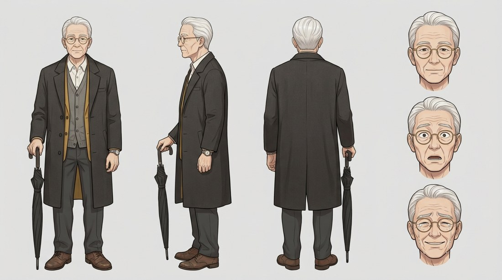
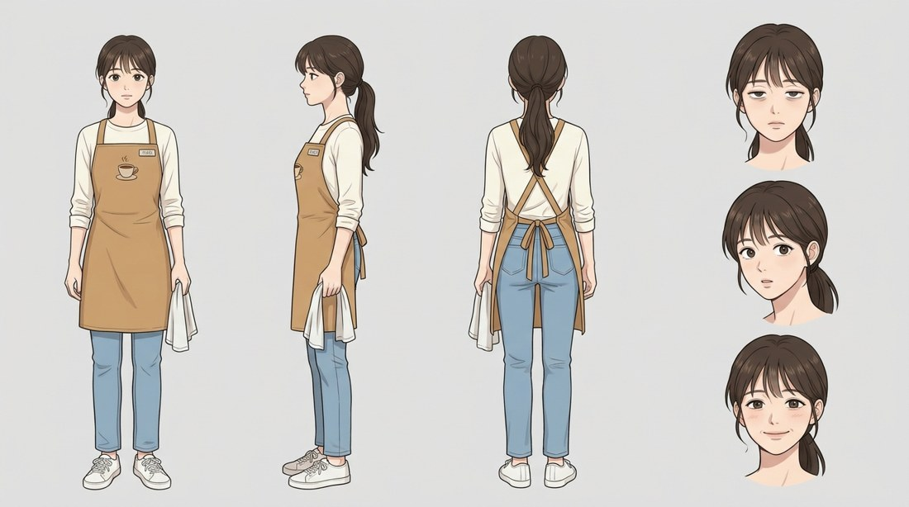
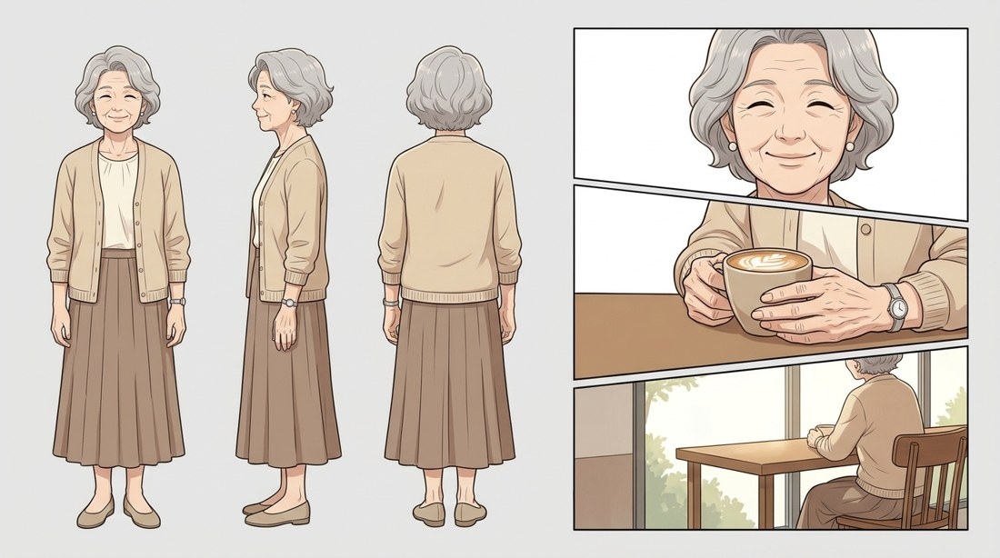
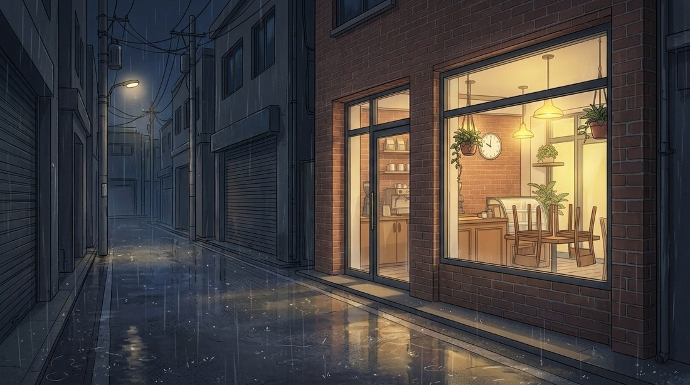
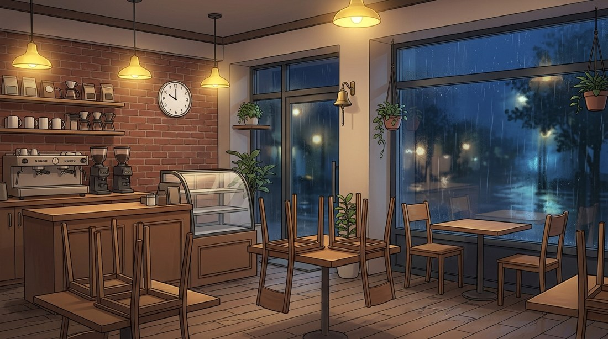
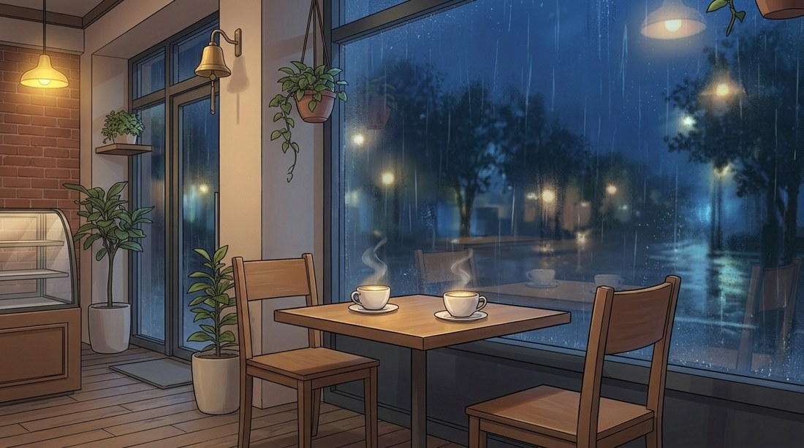
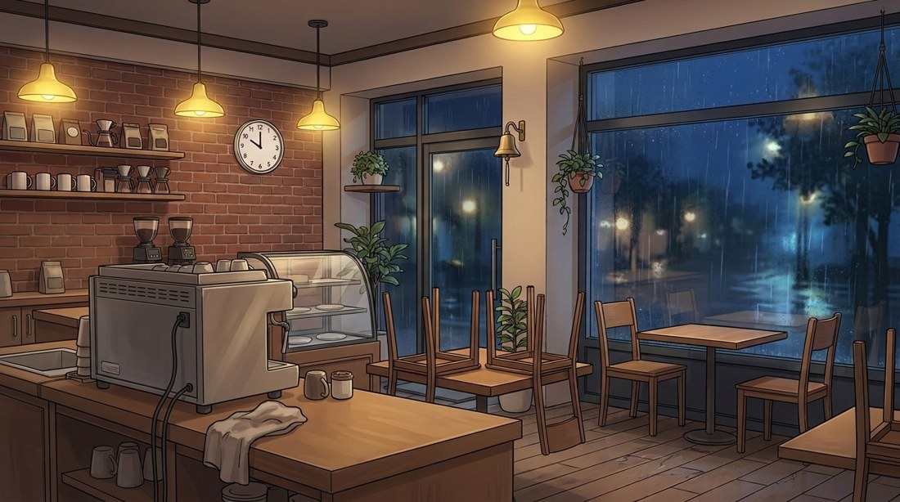

3막 구조 · 약 2분 · 누르면 해당 컷으로 이동
정면 · 측면 · 뒷면 + 표정 3종으로 모든 컷의 얼굴과 의상을 고정 · 누르면 크게 보기

조용하고 예의 바른 노신사. 아내가 선물한 손목시계를 아직 찬다.

무심한 척하지만 관찰력이 좋다. 매일 오는 손님을 몰래 신경 쓴다.

늘 창가 맞은편에 앉아 라떼를 마시던 사람. 정호와 같은 시계를 찼다.
따뜻한 실내와 푸른 비 오는 밤, 두 색 온도의 대비

불 켜진 가게는 이곳 하나

벽돌 벽 · 벽시계 · 올려진 의자

이야기의 중심, 마주 보는 두 의자

하린의 자리, 주문이 오가는 곳
로그라인, 3막 5시퀀스 설계
얼굴 · 의상 · 공간 고정
샷 사이즈 · 대사 · 타임코드
시트 참조로 일관성 유지
빗소리 · 피아노 · 자막